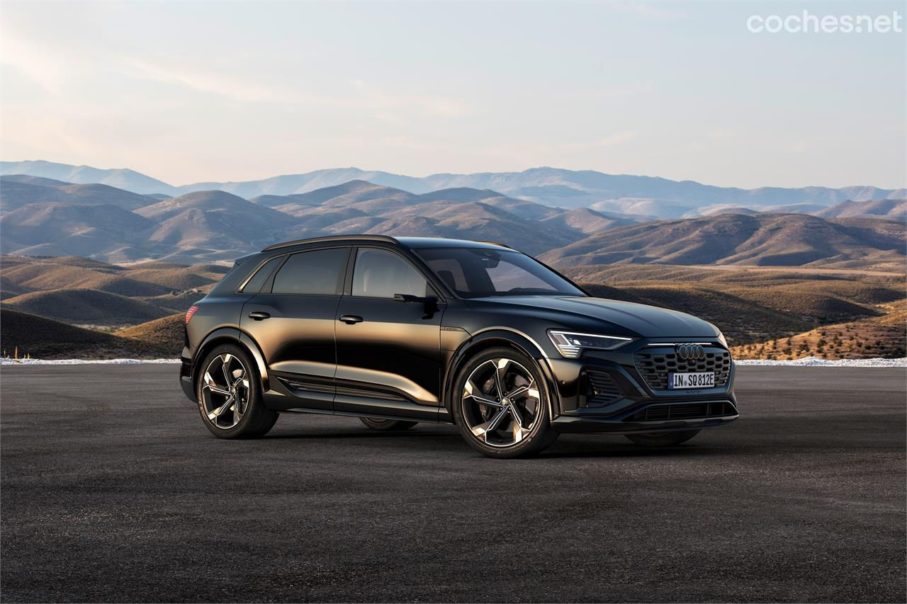

Audi Q8 e-tron: Cambio de nombre y más autonomía
Audi ha remodelado el e-Tron, su primer vehículo eléctrico lanzado en 2018 al que, coincidiendo
con esta puesta al día, ha cambiado el nombre. Ahora pasa a llamarse Q8 e-Tron y seguirá estando
disponible en las dos variantes de carrocería, la convencional y la Sportback, con un diseño más
crossover. Ambos modelos reciben un rediseño estético y, sobre todo, una batería más grande, lo
que incrementa la autonomía, y que se recarga con mayor rapidez.